我们知道，数据库的类型和实际开发语言的类型是不一致的，所以需要一座桥梁，桥的一端指定数据库的类型，另一端指定语言的类型。
不同数据库所支持的SQL类型之间有很大的不同，比如Oracle中有DECIMAL类型，Mysql中则没有，Mysql的varchar类型对应到Oracle却是varchar2。类似的，大部分数据库都有自己的类型规则。
幸运的是，各大数据库厂商都为自家的数据库提供了jdbc驱动包，它会按照jdbc标准，把自己的SQL类型转换成对应的jdbc类型，而这些jdbc类型都来自java.sql.Types中。
以下是所有的类型： ARRAY, BIGINT, BINARY, BIT, BLOB, BOOLEAN, CHAR, CLOB, DATALINK, DATE, DECIMAL, DISTINCT, DOUBLE, FLOAT, INTEGER, JAVA_OBJECT, LONGNVARCHAR, LONGVARBINARY, LONGVARCHAR, NCHAR, NCLOB, NULL, NUMERIC, NVARCHAR, OTHER, REAL, REF, ROWID, SMALLINT, SQLXML, STRUCT, TIME, TIMESTAMP, TINYINT, VARBINARY, VARCHAR
Jmr采用jdbc类型作为映射的标准的原因: 1.统一标准，不需要关心不同数据库类型的区别，所有类型都在jdbc类型中有对应。 2.方便设置映射，只需要为jdbc类型设置对应开发语言的映射类型。
以下是Mysql数据库中的一张表，我们可以看到它不同字段对应的类型。
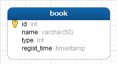
jdbcType即为jdbc类型，Jmr会转换成如下：
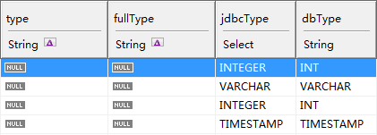
点击模型页-->选择映射和转换-->新映射
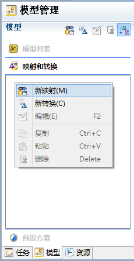
我们取名type，用来做为类型名的映射；右侧双击表格可以填写映射对应的类名。
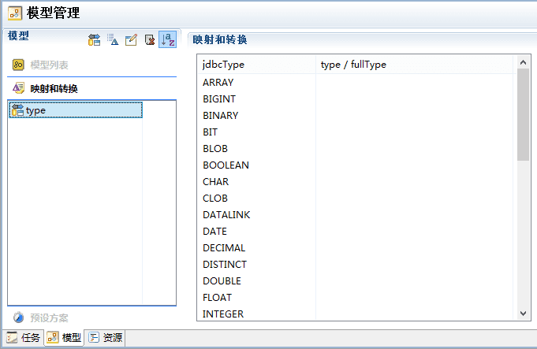
根据自己的需求填写jdbcType对应的类型（此处用java语言为例，也可以使用其它语言）
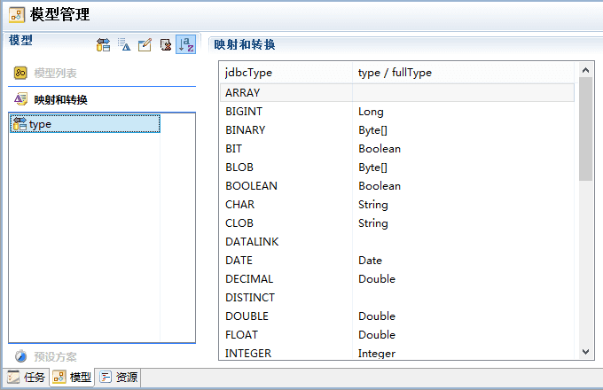
我们再新建一个映射，名为fullType，用来做为完整的类型名的映射。
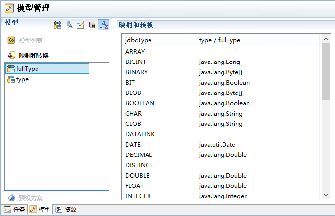
小贴士：在编辑类型时，可以使用右侧按钮，从左到右分别为： * 搜索类型按钮：可以搜索出项目中包含的类型，暂时只支持搜索java类型。 * 打开类型按钮：可以打开类型对应的源码，暂时只支持打开java源码。 * 删除按钮：删除已经输入的类型。
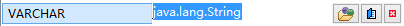
我们配置好映射后，可以在模型中使用配置好的映射。点击模型type和fullType上的图标。
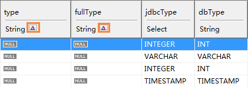
以fullType为例，我们选择的映射为fullType；点击转换，它会根据jdbcType的值，生成对应的类型。
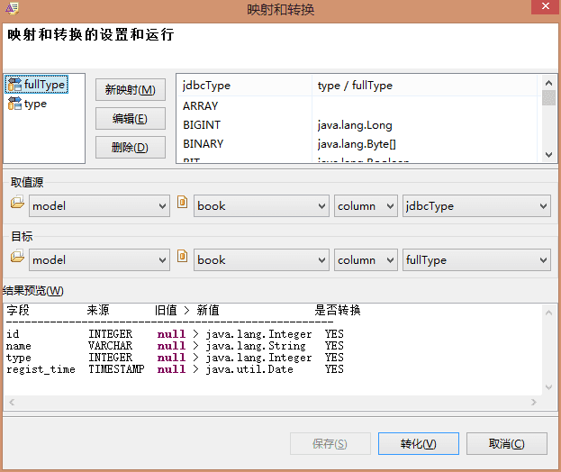
转换后的结果，可以看到type和fullType已经映射完成。
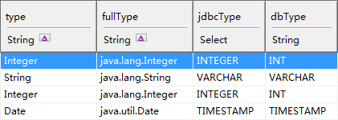
除了在模型中手动映射，还有更方便的方法，在模型转换的过程中就可以完成映射。
我们在预设方案中设置映射：点击模型页-->选择预设方案-->新预设
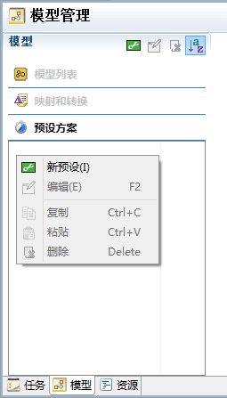
命名为init，预设方案会自带name，type，jdbcType三个字段。
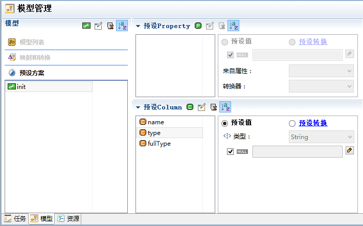
选中type和fullType-->预设转换-->来自列jdbcType，映射分别选type和fullType。
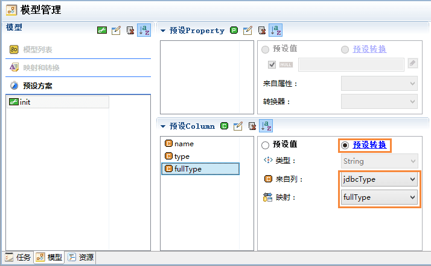
在模型转换时，选择init
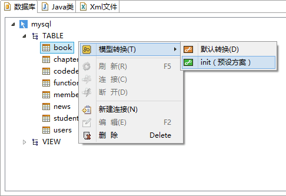
转换后的结果：
转换使用Action类自定义逻辑，例如：
点击模型页-->选择映射和转换-->新转换
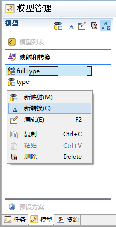
我们取名headLowerCamel
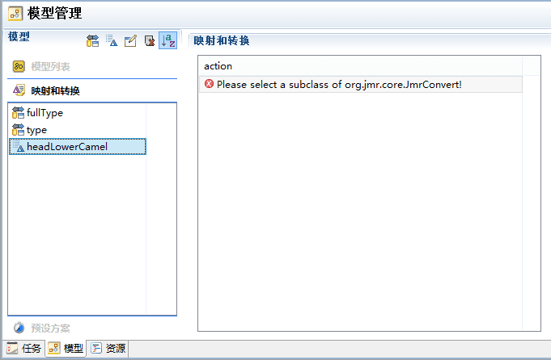
新建Jmr Convert，在菜单File或者右键菜单->New->Jmr Convert，或者在其它（Other）找到JMR目录下也有。
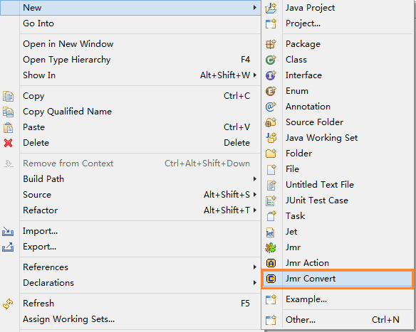
如果没有找打，在菜单File或者右键菜单->New->Other->Jmr下也有
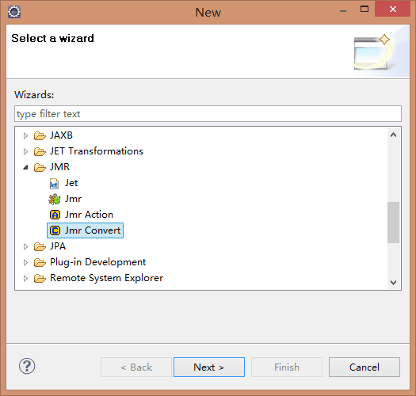
新建一个名为HeadLowerCamelConvert的转换
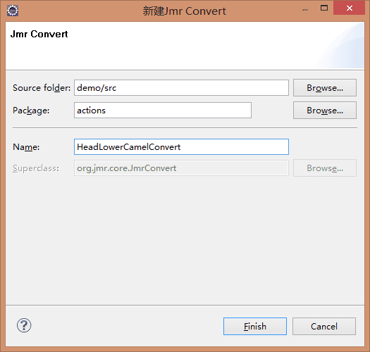
Action继承自JmrConvert，它有一个convert实现方法，参数value是传入的值，我们根据传入的值自定义处理逻辑后返回值
HeadLowerCamel会根据下化线分割字母大小写 比如数据库中有表里有字段名为regist_time，通过处理后作为java的属性为registTime。
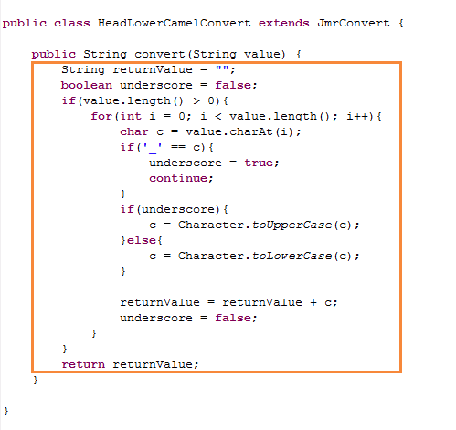
点击右侧按钮搜索Jmr Convert。
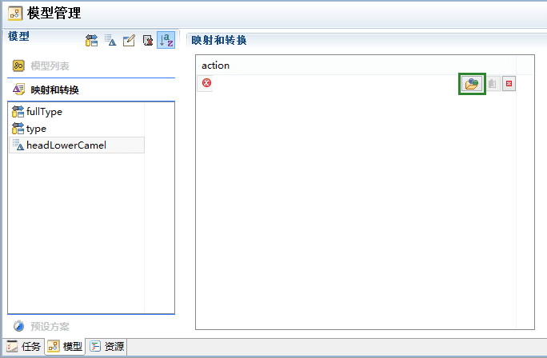
选择HeadLowerCamelConvert。
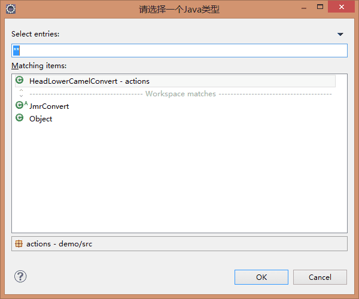
我们在配置另外一个转换器HeadUpperCamelConvert，配置过程一样，不再描述。
HeadUpperCamelConvert会根据下化线分割字母大小写，并且首字母大写。 比如数据库中有表里有表名为book_order，通过处理后作为java的类名为BookOrder。
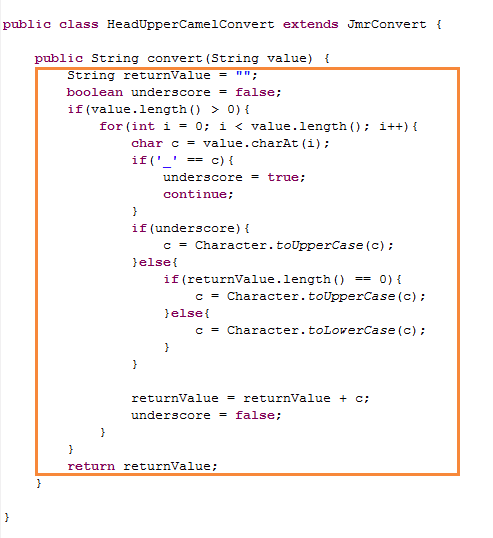
转换可以用在属性或者字段的属性上。
我们新建了一个属性名为ClassName，用来作为java的类名。
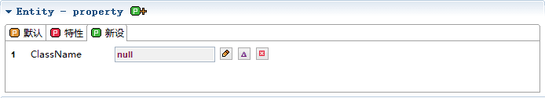
java类名头字母是驼峰式大写，我们想从模型的name值去转换，因为name和对应数据库表名一致。
点击转换图标，只要有这个图标的属性都可以使用转换。
选择headUpperCanelConvert，对于类名的转换，我们需要头字母大写的驼峰式转换，取值源选择name ，在预览中我们可以看到转换的结果，由book转换成了Book。最后点击转换。
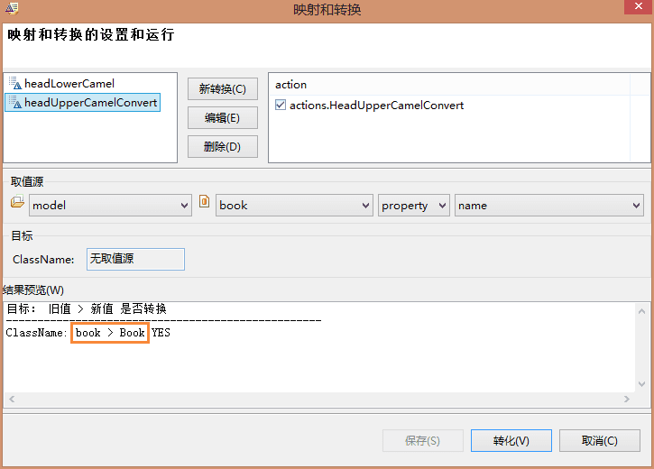
运行结果，得到的值Book赋给了ClassName。
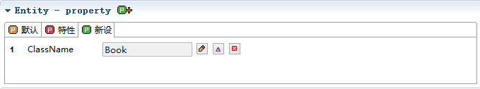
我们选择name，name默认情况下和id的值是一样的，但也可以通过转换得到。
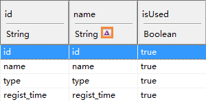
选择headLowerCanelConvert，对于字段名的转换，我们需要头字母小写的驼峰式转换，取值源字段id ，在预览中我们可以看到转换的结果，字段都转换成驼峰式格式。最后点击转换。、
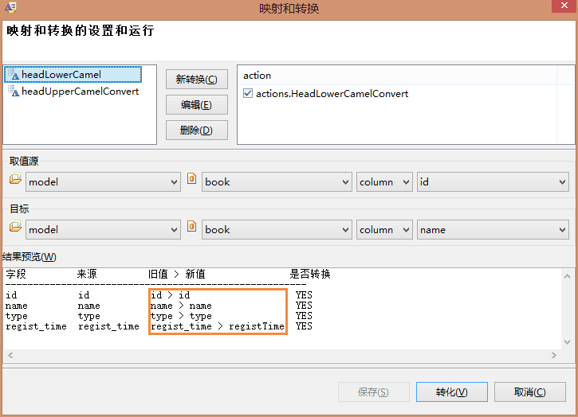
运行结果
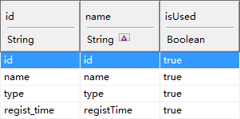
当然，也可以给新设的字段设置转换，只要有都可以进行转换。
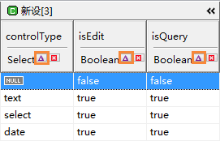
除了在模型中手动转换，还有更方便的方法，在生成模型的过程中就可以完成转换。
点击模型页-->选择预设方案，在之前建立好的预设方案init中，其中type和fullType我们是使用映射，这次选择name-->预设转换，来自列选id，转换器选headLowerCamel。
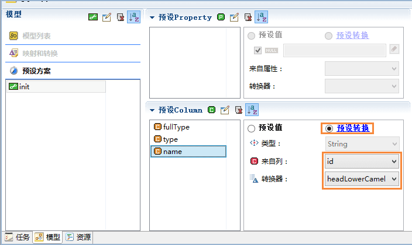
同时，我们还可以新设列中预设转换器，我们新建列fieldName，预设转换，来自列选id，转换器选headLowerCamel。
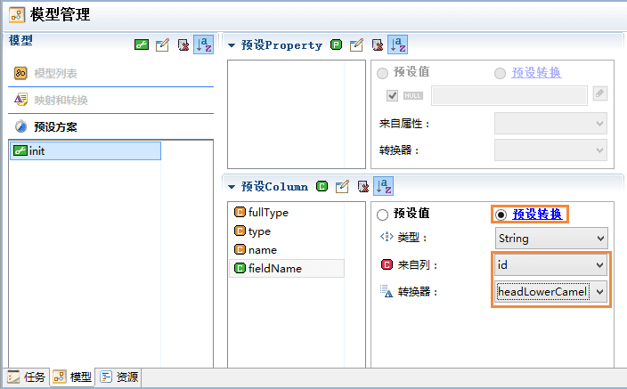
转换模型时，选择init。
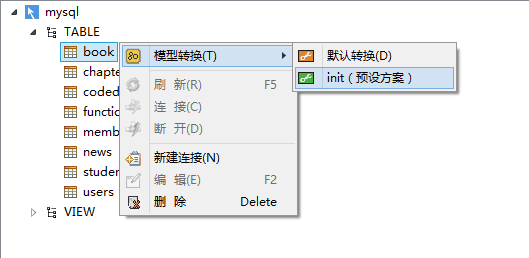
生成的模型，name和fieldName的字段都已经转换成首字母为小写的驼峰式格式。
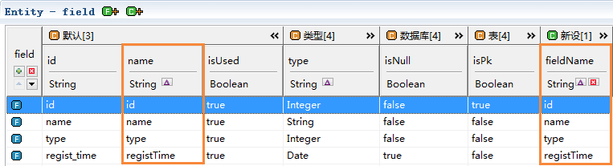